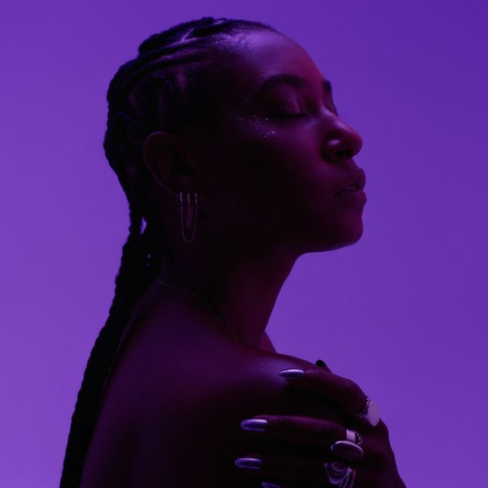
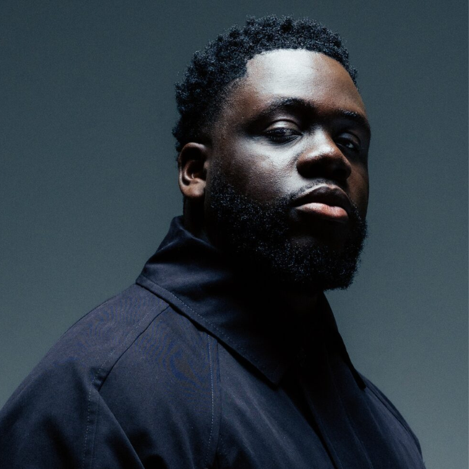
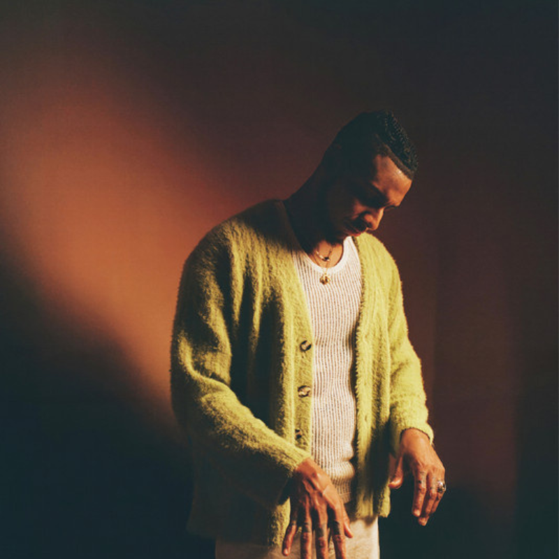
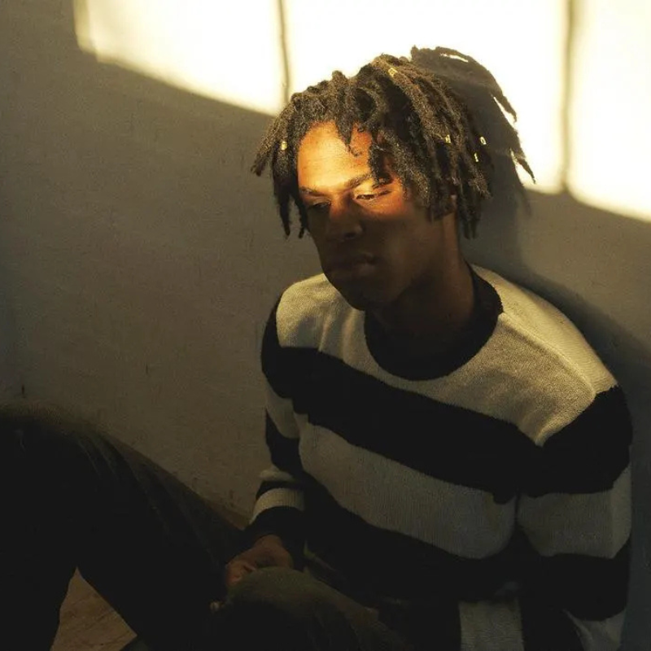
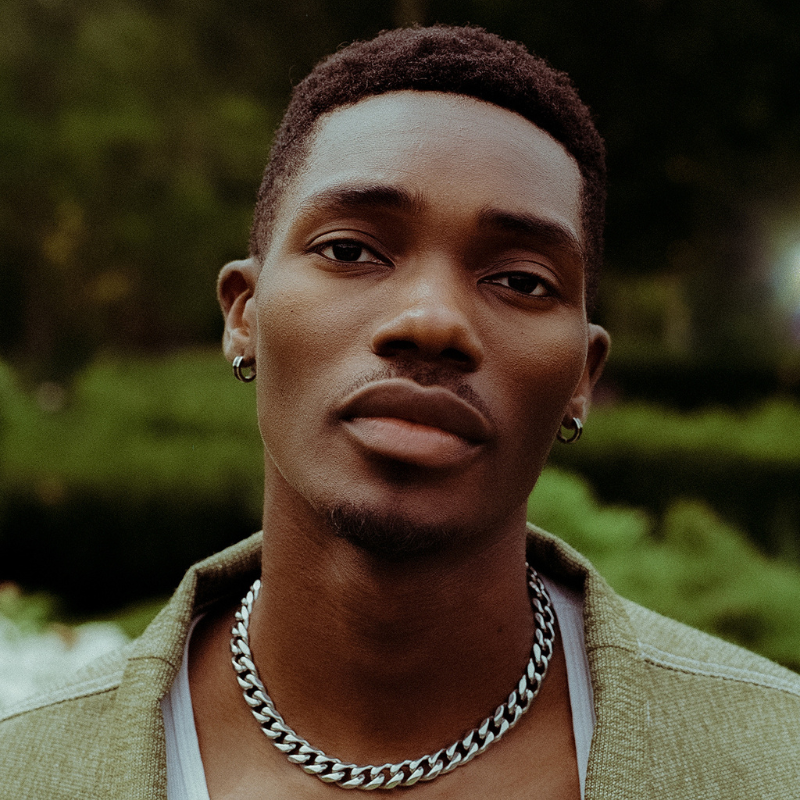
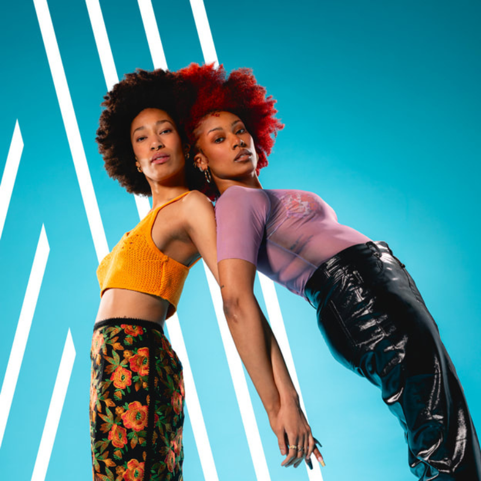

Où se déroule le festival ?
Eclipse se déroule à Montréal, dans un site extérieur spécialement aménagé pour accueillir les visiteurs, les scènes musicales et les activités du festival.
Le Festival Eclipse est un rendez-vous incontournable qui célèbre la musique, la créativité et les expériences collectives dans une ambiance vibrante au cœur de Montréal. Chaque année, des milliers de festivaliers se réunissent pour vivre plusieurs journées de spectacles exceptionnels mettant en vedette des artistes de renommée internationale ainsi que des talents émergents de la scène locale. Pensé comme un lieu de découverte et de rassemblement, le festival propose une programmation diversifiée où se côtoient musique R&B, pop, soul, hip-hop, folk, indie et plusieurs autres styles, permettant à chacun de trouver des performances qui correspondent à ses goûts.
Réparti sur plusieurs scènes, le site du Festival Eclipse offre une expérience immersive où chaque espace possède sa propre identité. La scène principale accueille les têtes d'affiche et les spectacles les plus attendus, tandis que des scènes secondaires permettent aux visiteurs de découvrir de nouveaux artistes dans une atmosphère plus intime.
Au-delà des concerts, le festival propose une multitude d'activités permettant aux visiteurs de profiter pleinement de leur journée. Des œuvres d'art interactives, des espaces de détente, des zones d'animation, des kiosques d'artisans locaux et des boutiques éphémères invitent les festivaliers à explorer le site entre deux spectacles. Plusieurs points de restauration mettent en valeur la richesse de la gastronomie montréalaise grâce à une sélection de camions de cuisine de rue, de restaurants partenaires et de producteurs locaux offrant des options variées, incluant des repas végétariens, végétaliens et sans gluten.
L'expérience du Festival Eclipse est conçue pour être accessible, confortable et sécuritaire. Des aires de repos ombragées, des stations d'eau potable gratuites, des bornes de recharge pour appareils mobiles, des casiers sécurisés ainsi que des services d'assistance sont disponibles sur le site afin que chacun puisse profiter pleinement de l'événement.
Que vous soyez un passionné de musique, un amateur de découvertes culturelles ou simplement à la recherche d'une sortie estivale unique, le Festival Eclipse promet une expérience complète où les spectacles, les rencontres et les émotions se succèdent du matin jusqu'à la tombée de la nuit. Plus qu'un simple festival, Eclipse est un lieu où les artistes, les visiteurs et la ville se rassemblent pour célébrer la musique, le partage et la créativité dans une atmosphère chaleureuse, inclusive et inoubliable.

Mardi 25 août 2026
Soul / Jazz

Jeudi 27 août 2026
Gospel / R&B

Vendredi 28 août 2026
Jazz / R&B

Lundi 31 août 2026
R&B / Soul
Dimanche 30 août 2026
Soul / Pop

Samedi 29 août 2026
Hip-hop / Soul

Mercredi 26 août 2026
R&B / Soul
Eclipse se déroule à Montréal, dans un site extérieur spécialement aménagé pour accueillir les visiteurs, les scènes musicales et les activités du festival.
La première édition d'Eclipse aura lieu du 25 au 31 août 2026. Pendant sept jours, le public pourra découvrir des artistes R&B, Soul et des talents émergents.
Les portes du festival ouvrent chaque jour à partir de 14 h. Les festivaliers sont invités à arriver tôt afin de profiter des activités, découvrir les différents espaces et assister aux premières performances de la journée.
Oui, le festival Eclipse est un événement ouvert à tous les âges. Nous souhaitons créer un espace rassembleur où les familles, les jeunes et les amateurs de musique de toutes générations peuvent profiter d'une expérience culturelle unique.
Comme Eclipse se déroule à la fin du mois d'août, nous recommandons de porter des vêtements
légers et
confortables pour les performances en journée, ainsi qu'une veste ou un chandail pour les
soirées
plus fraîches. Pensez également à apporter des chaussures adaptées afin de profiter pleinement
du
site du festival.
Voir la météo
Oui, le festival Eclipse a lieu même en cas de pluie. Les spectacles et activités sont maintenus selon les conditions de sécurité établies par l'organisation. En cas de situation exceptionnelle, les festivaliers seront informés rapidement par nos plateformes officielles.
Les petits sacs, bouteilles d'eau réutilisables et accessoires nécessaires au confort des festivaliers sont autorisés. Les objets dangereux, les armes, les contenants en verre et tout équipement pouvant nuire à la sécurité des participants sont interdits sur le site.
Vous souhaitez rejoindre l'équipe Eclipse ? Envoyez-nous votre candidature à l'adresse benevoles@eclipsefestival.com avec vos informations et vos disponibilités. Notre équipe vous contactera pour vous présenter les différentes opportunités de bénévolat.
Cliquez sur le titre pour actualiser la météo